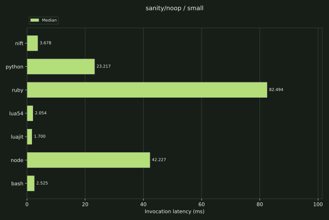
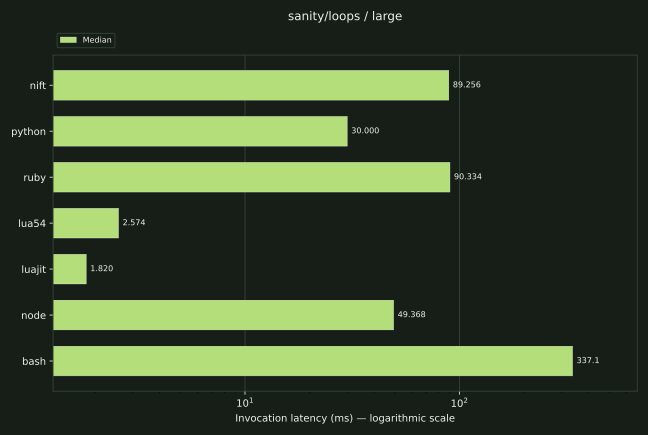
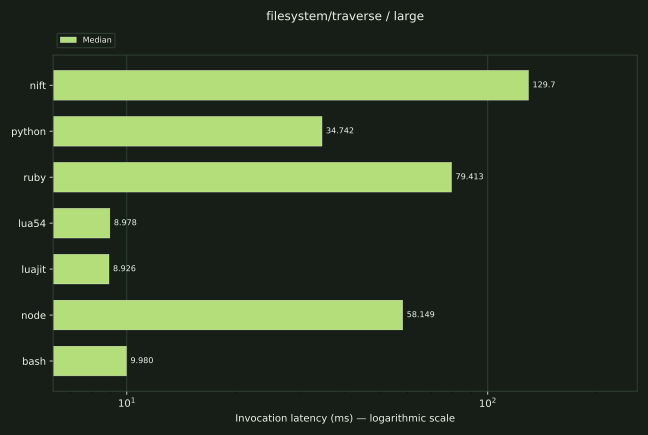

Experiment 01 / runtime & scripting
One runtime.
Different kinds
of work.
What does Nift cost as a scripting language? Separate startup-sensitive snippets from sustained computation and practical file/data work, then compare idiomatic implementations.
Series 20261010-v4100 · measured 2026-10-10. Nift 4.10.0 is a development build, built from this frozen source revision. The frozen v4.8 report and original figures, its complete raw evidence and the earlier v4.7.2 series remain available. Separate nodes may have different virtual CPUs; cross-node deltas cannot be attributed entirely to Nift. Run identity and build provenance. Campaign report and lifecycle.
Read the workload first
A language score hides the tradeoffs.
No-op/output mainly expose invocation cost. Tiny snippets are not application throughput.
Loops, calls, arrays, map/set, Fibonacci and grid BFS exercise interpreter/JIT and collection paths.
JSON reads/parsing, record transformation/traversal and recursive files include actual I/O/helper costs.
Absolute latency
Startup and sustained work tell different stories.
Nift’s tiny no-op median was 4.721 ms, while the large arithmetic-loop invocation was 74.997 ms. Read the latter alongside native/JIT peers below: low invocation cost does not establish sustained execution throughput.
| Workload / size | nift | python | ruby | lua54 | luajit | node | bash |
|---|---|---|---|---|---|---|---|
| sanity/noop / small | 4.721 | 21.908 | 73.225 | 1.995 | 1.676 | 48.943 | 2.777 |
| sanity/loops / large | 74.997 | 26.328 | 76.057 | 1.965 | 1.502 | 41.986 | 289.5 |
| sanity/function-calls / large | 185.1 | 30.651 | 74.983 | 3.677 | 1.554 | 38.739 | 508.6 |
| arrays-strings-hash/sort-index / large | 876.9 | 23.620 | 80.946 | 36.865 | 33.930 | 49.615 | 253.9 |
| graphs-trees-search/bfs / large | 654.6 | 92.437 | 119.4 | 35.364 | 16.888 | 88.376 | — |
| structured-data/json-parse / large | 192.3 | 80.117 | 190.3 | — | — | 69.158 | — |
| filesystem/traverse / large | 32.037 | 30.560 | 73.151 | 8.553 | 8.183 | 52.028 | 10.165 |
A dash (—) means the implementation was outside scope and deliberately excluded; it is not a zero or a failed measurement. Selected classes are not an overall ranking.









sanity/noop
| Size | nift | python | ruby | lua54 | luajit | node | bash |
|---|---|---|---|---|---|---|---|
| small | 4.721 | 21.908 | 73.225 | 1.995 | 1.676 | 48.943 | 2.777 |
| large | 2.553 | 18.542 | 68.678 | 1.402 | 1.389 | 31.883 | 1.790 |
sanity/output
| Size | nift | python | ruby | lua54 | luajit | node | bash |
|---|---|---|---|---|---|---|---|
| small | 2.959 | 18.115 | 68.741 | 1.529 | 1.420 | 35.990 | 1.910 |
| large | 2.709 | 18.048 | 70.784 | 1.513 | 1.355 | 35.646 | 1.805 |
sanity/loops
| Size | nift | python | ruby | lua54 | luajit | node | bash |
|---|---|---|---|---|---|---|---|
| small | 3.852 | 18.641 | 69.179 | 1.510 | 1.577 | 35.928 | 4.826 |
| large | 74.997 | 26.328 | 76.057 | 1.965 | 1.502 | 41.986 | 289.5 |
sanity/function-calls
| Size | nift | python | ruby | lua54 | luajit | node | bash |
|---|---|---|---|---|---|---|---|
| small | 4.987 | 18.254 | 69.493 | 1.563 | 1.452 | 34.940 | 7.028 |
| large | 185.1 | 30.651 | 74.983 | 3.677 | 1.554 | 38.739 | 508.6 |
arrays-strings-hash/scan
| Size | nift | python | ruby | lua54 | luajit | node | bash |
|---|---|---|---|---|---|---|---|
| small | 4.129 | 18.227 | 69.477 | 1.549 | 1.435 | 35.051 | 5.480 |
| large | 88.809 | 24.624 | 77.406 | 2.282 | 1.529 | 44.767 | 336.8 |
arrays-strings-hash/frequency-count
| Size | nift | python | ruby | lua54 | luajit | node | bash |
|---|---|---|---|---|---|---|---|
| small | 7.112 | 18.443 | 72.267 | 1.762 | 1.520 | 36.066 | 8.566 |
| large | 385.5 | 51.506 | 102.5 | 21.744 | 3.186 | 42.323 | 645.2 |
arrays-strings-hash/sliding-window
| Size | nift | python | ruby | lua54 | luajit | node | bash |
|---|---|---|---|---|---|---|---|
| small | 5.867 | 18.477 | 70.158 | 1.591 | 1.495 | 34.869 | 13.708 |
| large | 271.4 | 44.089 | 80.817 | 6.529 | 2.593 | 49.534 | 4,924.8 |
arrays-strings-hash/sort-index
| Size | nift | python | ruby | lua54 | luajit | node | bash |
|---|---|---|---|---|---|---|---|
| small | 8.230 | 18.281 | 68.862 | 1.766 | 1.666 | 35.560 | 10.355 |
| large | 876.9 | 23.620 | 80.946 | 36.865 | 33.930 | 49.615 | 253.9 |
arrays-strings-hash/map-set
| Size | nift | python | ruby | lua54 | luajit | node | bash |
|---|---|---|---|---|---|---|---|
| small | 5.173 | 18.369 | 72.938 | 1.631 | 1.495 | 35.675 | 4.752 |
| large | 215.2 | 29.803 | 96.162 | 7.345 | 2.875 | 50.766 | 271.4 |
dynamic-programming/fibonacci
| Size | nift | python | ruby | lua54 | luajit | node | bash |
|---|---|---|---|---|---|---|---|
| small | 3.083 | 18.452 | 70.169 | 1.563 | 1.382 | 35.123 | — |
| large | 152.1 | 33.780 | 84.640 | 2.903 | 2.166 | 44.316 | — |
graphs-trees-search/bfs
| Size | nift | python | ruby | lua54 | luajit | node | bash |
|---|---|---|---|---|---|---|---|
| small | 10.358 | 19.332 | 70.276 | 2.073 | 2.197 | 46.750 | — |
| large | 654.6 | 92.437 | 119.4 | 35.364 | 16.888 | 88.376 | — |
structured-data/json-parse
| Size | nift | python | ruby | lua54 | luajit | node | bash |
|---|---|---|---|---|---|---|---|
| small | 4.877 | 24.690 | 76.162 | — | — | 34.842 | — |
| large | 192.3 | 80.117 | 190.3 | — | — | 69.158 | — |
structured-data/json-transform
| Size | nift | python | ruby | lua54 | luajit | node | bash |
|---|---|---|---|---|---|---|---|
| small | 7.439 | 24.579 | 75.067 | — | — | 35.607 | — |
| large | 464.0 | 74.746 | 141.1 | — | — | 79.105 | — |
structured-data/json-traverse
| Size | nift | python | ruby | lua54 | luajit | node | bash |
|---|---|---|---|---|---|---|---|
| small | 6.380 | 24.009 | 75.850 | — | — | 36.286 | — |
| large | 357.8 | 83.418 | 185.2 | — | — | 73.456 | — |
filesystem/traverse
| Size | nift | python | ruby | lua54 | luajit | node | bash |
|---|---|---|---|---|---|---|---|
| small | 3.624 | 23.423 | 70.447 | 6.875 | 5.227 | 36.209 | 6.905 |
| large | 32.037 | 30.560 | 73.151 | 8.553 | 8.183 | 52.028 | 10.165 |
| Runtime | No-op RSS MiB | Large traversal RSS MiB |
|---|---|---|
| nift | 5.750 | 8.875 |
| python | 9.875 | 11.000 |
| ruby | 22.625 | 23.125 |
| lua54 | 2.250 | 2.500 |
| luajit | 2.375 | 2.500 |
| node | 43.449 | 54.951 |
| bash | 3.438 | 3.500 |
Measurement & correctness
Every sample earns its place.
Ten measured samples plus two retained warmups per job; serial execution, rotated order, C-supervised fork/exec-to-exit latency and Linux waited-child high-water RSS. Every invocation must exit successfully and match its golden output. Alternate numeric formatting is accepted only when exact finite Decimal values agree; rounded output does not count.
Preparation is outside timing. Every sample creates a fresh runtime process with OS caches uncontrolled. We call this fresh-process-repeated, correcting the old suite’s misleading identical cold/warm labels. Historical runs are not merged.
Implementation choices
Observation before interpretation.
Native/JIT collection mechanisms can earn an advantage in sustained computation; invocation cost matters more for tiny automation. Nift’s integrated file/data functionality may be useful without winning every row. No benchmark here prices maintainability or feature convenience.
Bash is excluded from structured-data, Fibonacci and BFS where unnatural. Its recursive file test uses find/wc; other implementations use native APIs. BFS compares idiomatic queue/distance structures rather than identical internals. JSON parse/traverse include the same fixture read. Helpers remain inside timing.
Frequency-count v2 streams counters consistently; sort-index describes sorting and indexed reads. The misleading two-pointer endpoint test is omitted. Three redundant sanity microbenchmarks and duplicate shell startup are omitted. JSON-mutate duplicated record transformation without proving persistent array mutation. Partial JSON-query and unimplemented SQLite/mixed/breadth families are explicit coverage gaps. More end-to-end practical workflows would strengthen relevance.
Frozen environment
One node. One logical CPU.
g6-standard-4, shared CPU; all measured processes pinned to CPU 0.
Virtual scheduling and neighbouring tenants may affect latency.
Kernel 6.8.0-134-generic; Python 3.12.3.
Tool/fixture preparation was outside timing. OS caches were uncontrolled; no machine-cold boot is claimed. Exact suite revision: 6f5b0e3d7c977fca25758c6e2dd2189b67d209ea. Linode plan and provisioning record; Teardown status and verification record. System startup-file hashes, distro/compiler package versions, filesystem, storage inventory and frequency/governor and cgroup information describe this specific node. Raw observations retain CPU/RAM inventory, binary hashes and exact commands. Historical nodes are separate series.
Versions
Tested systems
| System | Measured version |
|---|---|
| nift | Nift v4.10.0 |
| python | Python 3.12.3 |
| ruby | ruby 3.2.3 (2024-01-18 revision 52bb2ac0a6) [x86_64-linux-gnu] |
| lua54 | Lua 5.4.6 Copyright (C) 1994-2023 Lua.org, PUC-Rio |
| luajit | LuaJIT 2.1.1703358377 -- Copyright (C) 2005-2023 Mike Pall. https://luajit.org/ |
| node | v24.21.0 |
| bash | GNU bash, version 5.2.21(1)-release (x86_64-pc-linux-gnu) |
Reproduce / scrutinise
Every sample is retained.
Clean-checkout validation on the measurement node: complete smoke run.
Suite, audit and provisioning instructions ↗. Check out the exact measured suite revision and acquire its pinned tools. scripts/summarize.py regenerates summaries from one validated run; historical machines and revisions are never merged.
python3 scripts/campaign.py --nift /opt/campaign/tools/bin/nift --families sanity/noop,sanity/output,sanity/loops,sanity/function-calls,arrays-strings-hash/scan,arrays-strings-hash/frequency-count,arrays-strings-hash/sliding-window,arrays-strings-hash/sort-index,arrays-strings-hash/map-set,dynamic-programming/fibonacci,graphs-trees-search/bfs,structured-data/json-parse,structured-data/json-transform,structured-data/json-traverse,filesystem/traverse --samples 10 --warmups 2 --timeout 180 --output results/run.json
Warmups are retained separately. Correctness failures/timeouts stop publication. Corrected observations are all retained; superseded method, tool-pin and workload series are archived as diagnostics with reasons for exclusion. Percentiles use linear interpolation and describe this sample distribution; they are not confidence intervals.
Conclusion
Workload-specific evidence.
These results support bounded implementation comparisons, not one scripting-language league table. Algorithms are diagnostics; file/data rows start a practical corpus which should expand before making broad claims.
Nift Benchmarks